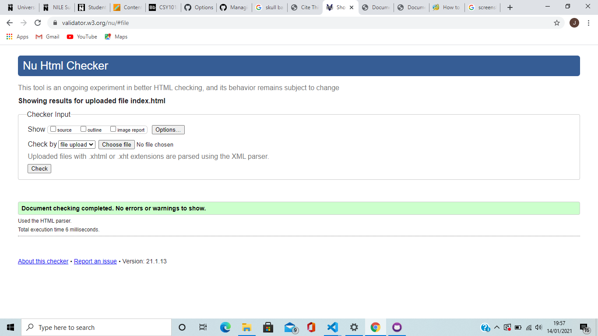
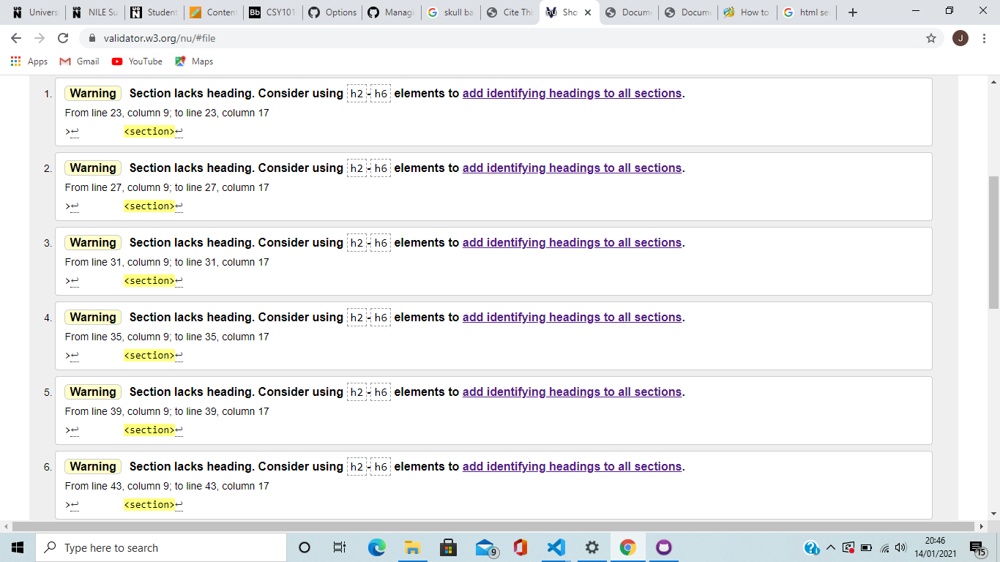
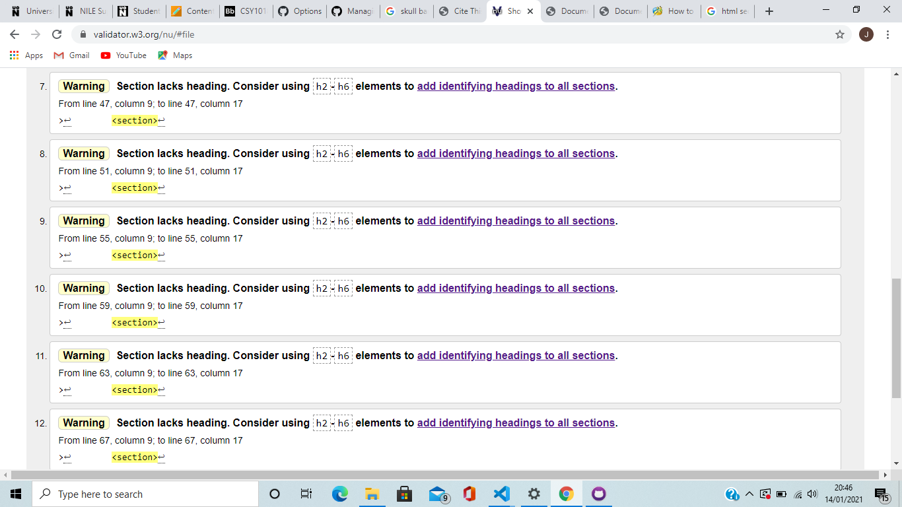
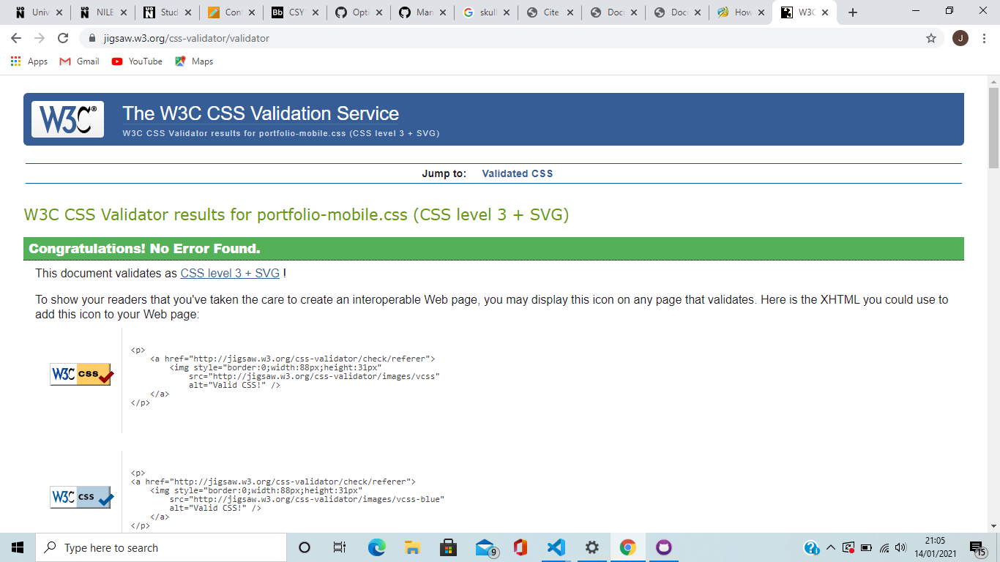
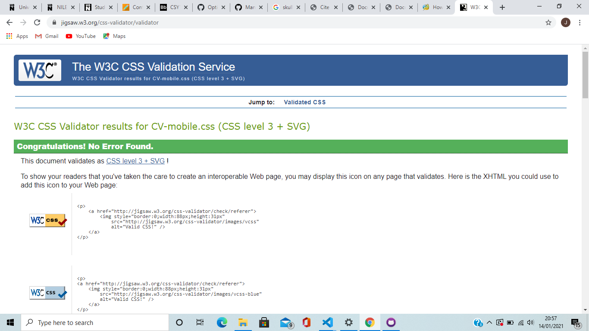
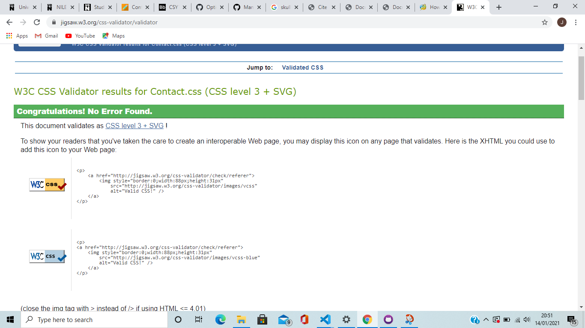
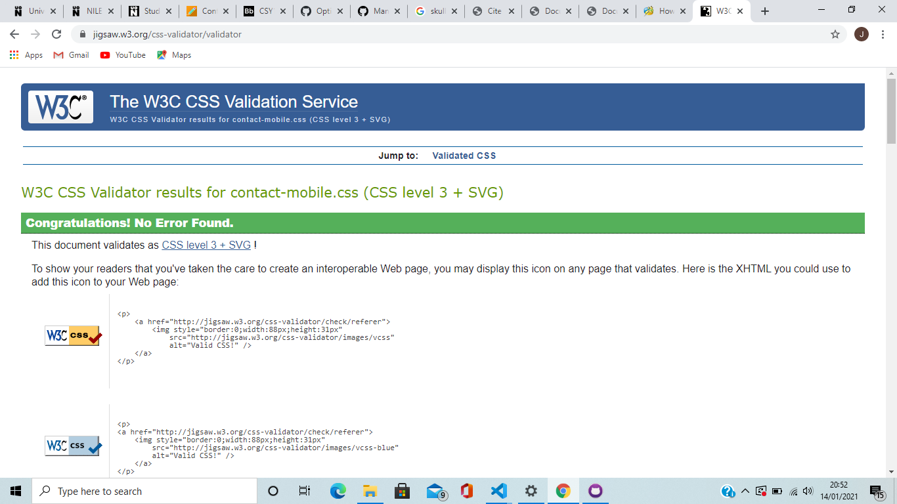
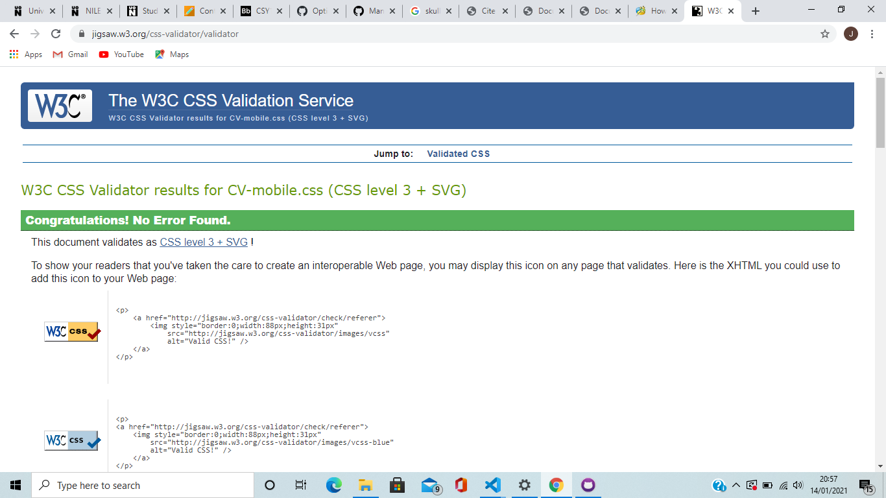
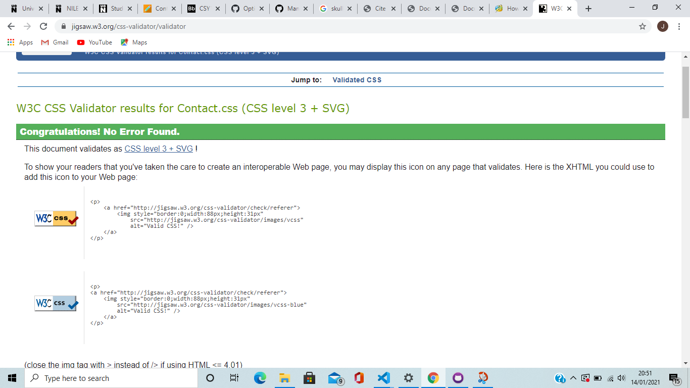
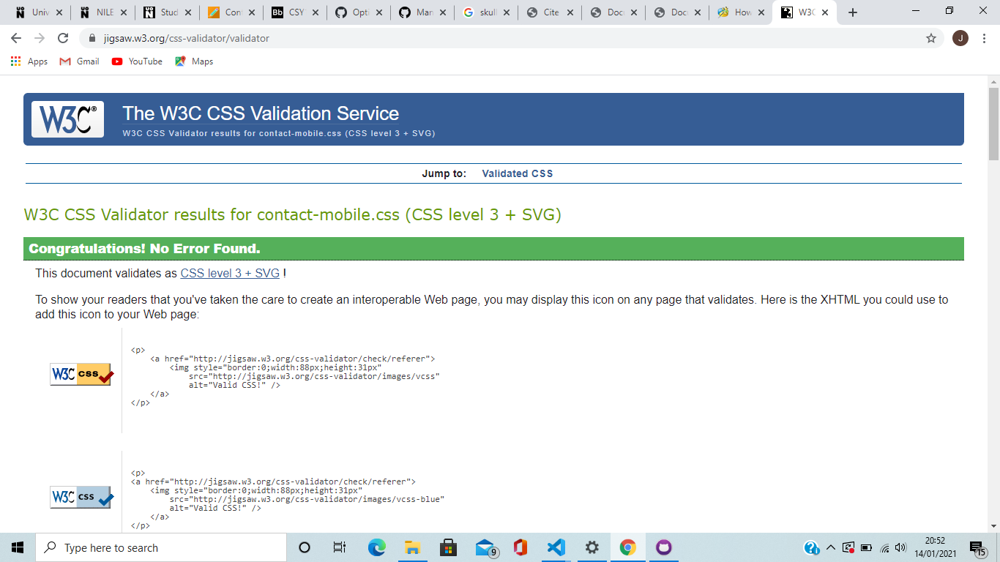

Site Report
Bibliography: The image I used 12 times in the Portfolio html page has been Harvard Referenced- VectorStock, n.d. Skull Banner Royalty Free Vector Image- Vectorstock. [image] Available at: http://VectorStock.com/35400 [Accessed 14 January 2021]. Overall this module has been very challenging for me as I have never thoroughly completed a website using html and css before. My favourite part of this module where I experienced the least trouble was creating the CV Page. This is because the html and css used were nearly identical to the Home page's and only needed a little tweaking. My least favourite part of the module where I experienced the most trouble was when using GitHub. I had problems with setting it up as I wasn't able to commit from Visual Studio and getting the code to perform actions to GitHub was a fairly lengthy process. The Home page I created first. It displays the site purpose. The main goal from this page was to create a base html and css page which I could reuse and tweak when creating the other webpages. This page looks the easiest to make but I found it fairly hard as it was the first one I created and I had to use some of the video guides to workout how to code properly. The part of this page I enjoyed the most was designing the background because I found it easy to code and I liked all the different colour options I could use. Next I created the Portfolio page. I used an image off the internet and repeated it 12 times in a 3x4 grid using css. The grid was definitely the trickiest part of designing this webpage because I was struggling to get the columns and rows to line up properly. Next was the Contact page. This page was possibly the hardest to make because the styling and positioning of the boxes were a lengthy process as many times the code I used wasn't working properly. I also had doubts about the amount of boxes I used because I now feel as if I only needed an email address and message. I then created the CV page. This was very easy as it required didn't require much altercation to both the html and css. I decided to use a couple of different headings for this page because I felt it looked more professional. Overall with the navigation features, I found the navigation bar for the PC version to be very easy to make and the hamburger icon on the mobile version to be very difficult to make. I found the navigation bar easy to make because I have previously designed one before on a college course and there were loads of basic tutorials online on how to do it. I found the hamburger icon very hard to make as I had never created one before and I had problems with it not displaying the navigation bar when I clicked on it and the appearance of it wouldn't seperate into 3 lines on top of each other like it needed to. I have validated all my pages. All the pages had 0 errors. The only page I had warnings for was the Portfolio html page and it was due to a lack of headers, however I tried fixing this and everytime I added a header it made the images become bigger and overlap. Initially I did have a few errors with placing p tags as a child in tags it couldn't be a child in and using invalid tags such as ul2, however I managed to fix these.    
 




